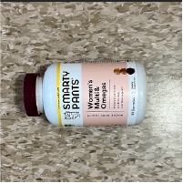

Trash of the Week is inspired by Netflix—specifically its documentaries. Among Netflix's host of many shows, movies, and dramas are assortments of documentaries. Some are about the ocean. Some are about crime. Others are about food, money, and media. The last set is my favorite because I find them the most relatable and educational about everyday life. They also tickled my brain every time because at least once was a mention of trickery. Everyone had some downfall hidden away through lack of regulation handling or otherwise as successful hiding often led to better market performance.
A few months ago, I watched Poison, a documentary that frames some of America's past large food-related disease outbreaks (e. Coli, for example) through gaps in regulatory standards and lack of space for waste. Oftentimes, the sources of those outbreaks could be traced back to some mismanagement of waste or improper surveillance of products. It made me question the realities behind my own trash and other elements in my life that relate to those series.
Thus, I am now documenting my trash every week for both myself and others to see. Hopefully, it can help me realize patterns in my lifestyle and ways I can improve things as I learn more about other cultures and ways to enjoy the things I do!
This week came be summarized as: Chobani Less Sugar Yogurt Cups, MadeGood Granola Minis, Cetaphil cleansers, Claritin bottles, Brita filters, multivitamins, a car battery, toothbrushes, and toothpaste. In all, this week taught me some lessons and reminded me of how much I regularly consume.
Particularly, I still eat a lot of yogurt. Every morning this week, I ate yogurt for breakfast as I did the weeks before. Thus, it again has a place in the gallery alongside the granola snacks I sometimes eat when my class schedule makes it more difficult to carry a full meal and take time to microwave it.
In terms of the rest of the week, the first half went to Walmart while the other went to Costco. Particularly, my family's van battery died. Thus, I went to Walmart to get it replaced as it was still under warranty. However, as we bought it online, there was an error in the system that resulted in having to come back the day after. I did get a new battery ultimately! The old battery was given to Walmart to safely dispose of. In the later part of the first half of the week, I purchased Claritin for my mother, leading to the empty packaging photographed. Furthermore, as the week progressed and my family continued to consume the foods from the fridge, I went to Costco on Saturday to restock my yogurt and other food items needed for next week. That purchase resulted in the Cetaphil container photographed! I originally did not plan to buy it, but a sale was there and my mother agreed we needed more at home. Resupplying our fridge led to the remaining items; my family tends to recycle in bulk and thus search for any other items left behind that needed to be recycled. For example, the toothbrush and toothpaste container were disposed of because my mom noticed how worn the toothbrush was and how empty the toothpaste was. Thus, they joined the recycle pile that day.
Overall, the week held to be rather normal. My family's traditions for recycling and restocking remained the same, and thus most of the items photographed were expected, even if not a continuous Costco buy. The battery fiasco though was a surprise! It taught me not to purchase special items online. At the time it was necessary, but waiting then would have saved the unexpected complications that came with trying to enact the warranty. My yogurt consumption is nonetheless strong and perhaps the greatest constant of the week. I have noticed a slight increase in them, but that will remain a trend to explore in later weeks. Regarding the items themselves, this week's collection can be organized into three categories: Cyclic Buy, Cyclic Removes, and Lessons Learned.
Primarily, Cyclic Buys refer to the Costco items mentioned above, and thus fall under the same category as their disposal was expected due to routine consumption. The items themselves are varied.
The yogurt cups, for example, are small, colorful, light, and smooth, making them easier to store and nice to hold. My most memorable moments with them are the happiness I feel in the morning when one of my preferred flavors is still yet to be taken from the fridge by someone else.
The granola snack bag, in contrast, is larger and almost flimsy because it is now empty. It fulfills its purpose but is much more ignorable because its contents are more used than itself. Our most memorable moment with it was questioning the company's choice of containment, given the snacks are also wrapped besides being stored in this bag.
Both nonetheless are thrown away because I needed to replace them with new ones and the products themselves are single-use. Given the Cetaphil bottle purchase was a surprise, the cardboard packaging was rougher than the other items but sturdier and thus was useful to carry items during my family's bulk recycle trip.Furthermore, the Cyclic Remove group categorizes items like the vitamin bottle, Brita filter, toothbrush, and toothpaste container. They tend to last longer than the Cyclic Buys and thus do not need to be bought as often, but their replacement is still expected once they are worn out of use or emptied to the point of uselessness.
The vitamin bottle and filter are both smooth and shiny because of their plastic material, making them satisfying to hold and almost slippery at times. Both happen to also be bought from Costco because my prior vitamin supply has run out as well as my mother's filter supply. They also happened to be on sale, which is surely a plus.
The toothbrush and paste container are rougher but better to grip. They came complimentary with our annual dentist visit. The toothbrush is much older and messy however as we finally disposed of it after using it to clean other nonessential items for years.
Ultimately, these items were all thrown away because their purposes were served, leaving them uselessly taking up space that their replacements could instead use well.
Finally, the Lessons Learned category involves the car battery and the Claritin. In addition to both being bought at Walmart, both items gave me some trouble in their purchase or return, reminding me now to avoid repeating my past steps the next time my family needs to purchase them.
Unlike the Claritin box, the car battery is rather heavy. It luckily had a handle, but it nonetheless strained my arm each of the six times I have had to carry it to and from my car. The battery was also a bit dusty. Fortunately, the only flaw of the Claritin packaging was that it was rather flimsy.
My most memorable memory with the car battery is the GPS-less drive home I had to complete because of it after my phone battery died at the Walmart I was at (it was my first time at this store). My most memorable moment with the packaging was the long system of trying to get it out of the glass it was encased in before purchasing it. Overall, this category is not filled with pretty memories.

Blueberry Chobani Less Sugar Yogurt Cup

EverStart Group 35/85 Battery

Cetaphil Cleanser Cardboard Packaging

Claritin Bottle Packaging

Brita Water Filter

MadeGood Granola Minis Packets Packaging
Smartypants Women's Multivitamin Bottle

Old Repurposed Colgate Toothbrush

Mini Colgate Toothpaste Cardboard Packaging
This week's “Item of the Week” is the car battery!
I chose this to hold the title due to the lengthy experience I had with disposing of it this week as well as its surprise entrance to the list.
Its entrance started early in the week on its coldest day. That day, my family's van would not even sputter before and after jump start attempts, leaving us to conclude that it was damaged in some way after a year of great service. Given that it was still the warranty period, we searched for the closest store with the battery in stock after a visit to our local Walmart was not fruitful. The closest was a Walmart that no one had visited before, leaving the trip at the mercy of our GPS and a need for a replacement battery. After waiting for a mechanic to help us, we got the battery tested at the auto center, confirming our suspicions.
The true issue came at checkout. As the actual order of the battery was a year old, it was no longer in Walmart's system! Thus, after waiting for someone who knew how to conduct battery exchanges, we tried to receive store credit for the battery. In another twist of luck, as we bought the battery online, it showed $0.00 credit in the system! As my phone battery died, I left defeated while my mom at home tried to call customer service to help us solve the credit disparity. As the location was unfamiliar to me, I tried my best to memorize the GPS instructions before my phone died. Luckily, I got the path right and didn't need to find a way to call for help. The next day, I went back to try again. Fortunately, they were able to find the problem and replace the battery! Walmart received the old battery to properly discard while I returned home with the new one and receipt of the switch. I left earlier than I expected that day, and with GPS this time!
In terms of the logistics of the item, the battery was an EverStart battery. Thus, it was Walmart's brand. Our model was produced by Johnson Controls, one of the largest automotive battery manfacturers. EverStart came into existence and rose in popularity due to its overall reliability and marine battery products. Our battery, like the other Walmart battery was produced in a factory-style environment, where plates of alloys were brought together into positive and negative cells to allow the battery to send and retain charge. Our battery was a lead-acid battery, so it had a collection of lead, sulfuric acid, and lead dioxide to function. Health and environmental effects for car batteries like ours can stem from improper disposal . Specifically, they can leak if not handled correctly, thus contaminating surrounding earth and water supplies with lead.
At last, the week is complete! Thank you for visiting me as I document this week's trash journey. I hope you found some of the items as surprising as I did--although hopefully not all as tiresome. For next week, I will keep an eye on my yogurt consumption to see if this week's trend continues. Hopefully, Costco will also have more interesting items on sale that may end up on this list later on, and Walmart will not make me spend another 7 hours to replace a battery. If you have any questions or thoughts, feel free to comment them! I would love to see what your trash week looks like or any ideas you may have on how to improve my journey. Until next time!